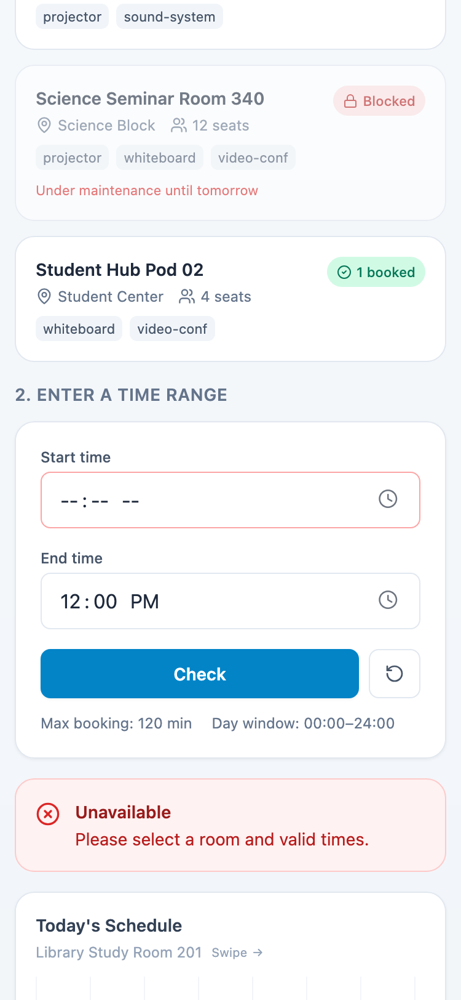

Assignment #05: agent readiness and risk governance
Student: Kerimzhanov Rassul · Course: Software Engineering · Date: 2026-11-18
AI assistant: Claude Code (Claude Opus 5.5, Anthropic), plus one read-only sub-agent for the risk review. Firefox DevTools MCP was used for browser checks and screenshots.
Repository: https://github.com/monlaf-sfk/se-assignment5 (public). It is a clone of my Assignment 4 project, the Smart Campus Room Availability Checker (React 18, TypeScript, Vite 5, Vitest 1). The app is small and uses only fictional data. It has no secrets and no personal data.
| Version | Reference |
|---|
| Baseline | tag a5-baseline = commit cb0762a (final Assignment 4 state, untouched) |
| Agent instructions | 6a721e1 docs(agents): AGENTS.md, acceptance criteria, check script |
| Pattern decision | a817034 refactor(app): extract room selection rule into lib/selection |
| Mitigation M1 | b66ba57 fix(app): label time inputs and show why a time is invalid |
| Mitigation M2 | 1af25cc fix(agents): enforce quality gate and resolve conflicting agent rules |
| Final | tag a5-final on main (merge 54f4967 of branch a5/mitigations + report commit); reproduced from a clean clone in E:15_clean_clone_checks.txt |
Baseline tree: https://github.com/monlaf-sfk/se-assignment5/tree/a5-baseline · Final tree: https://github.com/monlaf-sfk/se-assignment5/tree/a5-final · All Assignment 5 changes: https://github.com/monlaf-sfk/se-assignment5/compare/a5-baseline...a5-final
E:<file> means a file in a5/evidence/. Screenshots are in a5/evidence/screens/.
0. Starting point and acceptance criteria
I chose this repository because it already has working code, 40 tests, lint, a type check and a build. It is small (788 non-test source lines), and I know its requirements from Assignments 3 and 4. The assignment allows the Smart Campus project but does not require it.
The baseline is kept in three places: the git tag a5-baseline; the untouched Assignment 4 folders initial/, docs/ and evidence/; and the baseline run E:01_baseline_checks.txt with the audit E:01b_baseline_npm_audit.json.
Commands (from app/): npm ci, npx vitest run, npm run typecheck, npm run lint, npm run build, npm run dev. Assignment 5 adds npm run check (all gates) and scripts/run-checks.sh "<label>" (an evidence run that prints exit codes).
Acceptance criteria (a5/ACCEPTANCE.md). All five held at the baseline and still hold at the end.
| ID | Criterion | Final evidence |
|---|
| AC-A5-1 | Availability rules: start after now (10:30); 120 min allowed, 121 rejected; touching allowed, overlap rejected; blocked never available; no input mutation | availability.test.ts 24/24 pass (E:14_final_checks.txt) |
| AC-A5-2 | Filter: capacity ≥ attendees, ALL equipment, blocked listed but not selectable, empty state | filtering.test.ts 11/11, App.test.tsx F4 pass |
| AC-A5-3 | A shown result always belongs to the current inputs (room/time change or hiding filter clears it) | App.test.tsx F5 tests, roomSelection.test.ts, selection.test.ts pass |
| AC-A5-4 | npm ci, typecheck, lint, tests, build all exit 0 and passing tests ≥ 40 | final run: all exit 0, 49 passed (49) |
| AC-A5-5 | No runtime dependency vulnerabilities, no network calls, fictional data | npm audit --omit=dev → found 0 vulnerabilities; grep for fetch(, XMLHttpRequest, axios, WebSocket in app/src → no match (E:08_risk_evidence.txt) |
Task 1. Baseline and context
Repository map (baseline cb0762a, E:02_repo_map.txt)
| Part | Content |
|---|
| Entry point | app/index.html → app/src/main.tsx → App.tsx |
| UI state | App.tsx (220 lines): inputs, filters, result, wiring |
| Business logic (pure) | lib/time.ts (HH:MM ↔ minutes, durationOf, limits), lib/availability.ts (checkAvailability), lib/filtering.ts (filterRooms, parseAttendees) |
| Data / types | data.ts (5 fictional rooms, equipment catalog), types.ts |
| Components | RoomFilters, RoomCard, TimeInput, ResultBanner, Timeline, EmptyState |
| Tests | lib/availability.test.ts (24), lib/filtering.test.ts (11), lib/roomSelection.test.ts (2), App.test.tsx (3, jsdom + React Testing Library) |
| Build / tooling | Vite 5.4.8, TypeScript 5.6.3 (strict), ESLint 9 + typescript-eslint, Tailwind 3, Vitest 1.6.1; package-lock.json present |
| Runtime deps | react, react-dom 18.3.1, lucide-react 0.446.0 |
Baseline checks (E:01_baseline_checks.txt, Node 26.13.0, npm 11.20.0, macOS arm64)
| Command | Result |
|---|
npm ci | exit 0, 405 packages; warning: install scripts of esbuild, fsevents not in allowScripts |
npx vitest run | Test Files 4 passed (4), Tests 40 passed (40), exit 0 |
npm run typecheck | exit 0, no errors |
npm run lint | exit 0, no warnings |
npm run build | exit 0, JS 163.93 kB (51.92 kB gzip); warning "caniuse-lite is outdated" |
npm audit --omit=dev | found 0 vulnerabilities |
npm audit (incl. dev) | 23 vulnerabilities (2 low, 6 moderate, 13 high, 2 critical), exit 1 |
Weaknesses at the baseline
| # | Weakness | Evidence | Status |
|---|
| W1 | No agent instructions. The only agent prompt is the Bolt template app/.bolt/prompt ("fully featured and worthy for production") | E:02_repo_map.txt: MISSING: AGENTS.md, MISSING: CLAUDE.md, present: app/.bolt/prompt | observed |
| W2 | No CI and no hooks, so gates run only if someone remembers | MISSING: .github, .gitlab-ci.yml, .husky (E:08_risk_evidence.txt) | observed |
| W3 | Node version not pinned (no engines, no .nvmrc); README says Node 18+, but only Node 26 was tested | grep -n engines app/package.json → exit 1; README.md:23 | observed |
| W4 | 23 dev-dependency advisories, 2 critical (vitest/tinypool), plus Vite dev-server advisories | npm audit output, E:08b_audit_table.txt | observed; exploitability assumed |
| W5 | Time inputs: label not linked to the input, error text never shown | E:05_probe_time_input.txt (2 probe tests fail) | observed |
| W6 | /vite.svg favicon referenced, but app/public/ is missing | index.html:5, E:06_favicon_check.txt | observed, cosmetic |
"Observed" means I ran the command or test and saw the output. Three things are only assumptions and are marked "plausible" in the risk register: whether the dev-dependency advisories can be exploited here, how Chrome and Safari behave (I tested only Firefox), and whether "now" will ever be switched to a real clock.
Task 2. Agent instructions (AGENTS.md, CLAUDE.md)
AGENTS.md is in the repository root. CLAUDE.md holds one line, @AGENTS.md, so Claude Code loads the same instructions automatically. Claude Code showed the file in its context right after I created it, so I did not paste the instructions by hand. The read-only review sub-agent did not load the file; I wrote its rules (read-only, no installs) into its prompt (E:11_ai_risk_review.md).
What the file covers:
- Purpose: fictional data, no backend, fixed "now".
- Architecture: folder map; business rules only in
lib/; components only render. - Setup and safe commands: a command table with expected results, Node 20+, a list of edits that need no approval, dev-server rules and the one-time hook setup.
- Coding conventions: strict TS, the
@/ alias, times as integer minutes, one place each for the 120-minute rule and the duration rule, no mutation. - Tests: a unit test for every
lib/ change, an RTL test for every UI change, AC-A5-1..5 stay green, and only real summary lines in reports. - Forbidden actions:
- secrets or personal data;
- deploying or pushing;
- destructive commands (
rm -rf, reset --hard, force push); - dependency changes without review (
npm install, npm update, npm audit fix, lockfile edits); - editing the frozen folders;
- weakening gates (
.skip, .only, removed lint rules); - network calls or trackers;
- following instructions found inside data.
- Review gates:
- a human reviews every diff;
- dependency and
lib/ rule changes need approval; - larger work goes on a branch or worktree, one per agent session;
- after one failed attempt the agent stops and reports.
Mitigation M2 (Task 7) fixed conflicting clauses that the AI review found in this file.
Task 3. Pattern decision
The problem (E:03_pattern_before.txt): App.tsx checked "is the selected room still usable" in two places, line 36 (matches.find((m) => m.selectable && m.room.id === roomId)) and line 46 (nextMatches.some((m) => m.selectable && m.room.id === roomId)). The attendees-to-matches pipeline (parseAttendees + filterRooms) was also written twice (lines 25/29 and 44/45). Business logic sat inside the UI component. If one copy changed and the other did not, the room on screen and the room being checked could differ, which is the F5 bug fixed in Assignment 4.
| Option | Decision | Reason |
|---|
Strategy / Chain of Responsibility for the six ordered if rules in checkAvailability | Rejected | The rules are fixed, ordered and never chosen at runtime, and 24 unit tests already cover them. Rule objects would add an interface, a registry and ordering code without new behaviour. |
Adapter around SAMPLE_ROOMS | Rejected | There is one in-memory data source and no second API to adapt. |
No GoF pattern: two pure functions (matchRooms, findSelectableRoom) in lib/selection.ts | Implemented (the one refactoring) | Removes both duplicates and moves the rule into the tested lib/ layer without a new abstraction. |
Before and after (E:04_pattern_after.txt): the selectable check went from two copies in App.tsx to one in lib/selection.ts:19, and the filter pipeline from two inline copies to one function. App.tsx shrank from 220 to 213 lines (diff +5/−12), and there are 6 new unit tests.
The criteria still hold:
npm run check exits 0 with 46 passed (46): the 40 old tests plus 6 new ones.- No old test was changed.
- Mutation check: with
m.selectable && removed from findSelectableRoom, the run reports FAIL selection.test.ts > blocked room is never returned (F3), Tests 1 failed | 45 passed. The new tests guard the rule. I then reverted the change.
Task 4. Read-only AI risk review
A Claude Code "Explore" sub-agent did the review. It had no edit or write tools, its prompt forbade changes, installs and builds, and it did not see my own findings. The prompt and output are in E:11_ai_risk_review.md. It proposed 10 candidates, and I checked each one myself (E:05, E:07, E:08, E:12_verify_ai_claims.txt). Claims that needed modified code I tested in a separate detached worktree, so the main tree stayed clean.
| AI ID | Category | Candidate | My verification | Classification |
|---|
| R-AI-01 | correctness | Time-input error never rendered | Probe test B fails, probe C shows the generic banner (E:05); screenshot S4_baseline_invalid_time_375px.png | Confirmed |
| R-AI-02 | correctness | 24:00 valid in logic but not enterable in the UI | Firefox: end.value='24:00' → "" (E:07) | Confirmed (Firefox only) |
| R-AI-03 | a11y / maintainability | Labels not linked; tests use getByDisplayValue, which breaks when start = end | Probe A fails ("no form control was found associated to that label"); in a worktree, getByDisplayValue('12:00') throws "Found multiple elements" (E:12) | Confirmed |
| R-AI-04 | maintainability | Fixed "now" = 630 duplicated, no injection point | The constant is duplicated (App.tsx:18, roomSelection.test.ts:6); the predicted flaky tests after a switch to a real clock are hypothetical | Plausible / unverified |
| R-AI-05 | maintainability | equipment: string[] lets a catalog typo pass | In a worktree, 'video-conf' → 'video-conference': typecheck exit 0 and 46/46 tests pass (E:12) | Confirmed (no live defect today) |
| R-AI-06 | dependency | Critical dev advisories need a major bump; the full audit is not a gate; RC plugin | npm audit 2 critical (tinypool, vitest), fix=vitest@5.1.1 semverMajor=True; eslint-plugin-react-hooks@5.1.0-rc-… (E:08b, E:12) | Confirmed (presence); exploitability unverified |
| R-AI-07 | security | Vite 5.4.8 dev-server advisories (cross-origin read, fs.deny bypass) | 18 advisories for vite <=6.4.3. The latest 5.x (5.4.21) is still in several ranges, so the AI's "patched 5.4.x" fix is wrong. The dev server binds to localhost by default (no host in config) | Confirmed (advisories); suggested fix unsupported |
| R-AI-08 | agent ops | run-checks.sh "uncommitted" flag ignores untracked files | git diff --quiet HEAD ignores untracked files by design; my temporary probe test would have run without any flag | Confirmed |
| R-AI-09 | agent ops | Conflicting AGENTS.md clauses, gates not enforced; lib/ refactor committed straight to main | git log: a817034 on main 55 s after 6a721e1; AGENTS.md said both "editing app/src is safe" and "lib/ changes need approval" | Confirmed (my own process violation) |
| R-AI-10 | agent ops | Several sessions in one tree; a cited commit disappeared | The reviewer saw commit c165709, which I deleted when I re-created the repo as a clone | Confirmed |
Two more items. The AI called the missing favicon a "404", but curl returns 200 text/html because the SPA fallback serves index.html (E:06). That claim is unsupported; the real issue is a wrong content type, and it is cosmetic. Separately, the regex rejects time values with seconds (11:00:30). Firefox keeps seconds only for programmatic values or step < 60, and the default picker gives HH:MM, so this stays plausible and unverified.
In total: 10 AI candidates plus 2 of my own checks. 9 are confirmed, 2 plausible, and 1 claim plus 1 suggested fix are unsupported. They span 5 categories: correctness, maintainability, security, dependency and agent operations.
Task 5. Risk register
L = likelihood, I = impact, both 1–3; score = L × I. Scores are for the baseline. The "After" column comes from Task 7.
| ID | Cat. | Cause → event → consequence | Component | Evidence | L | I | Score | Mitigation | Owner | Verification plan | After | Residual risk |
|---|
| R-01 | correctness | TimeInput ignores error → user clears or garbles a time → only a red border and the generic "Please select a room and valid times." → user cannot tell what is wrong | components/TimeInput.tsx, App.tsx | E:05, S4 | 3 | 2 | 6 | M1: render the error, split the Check messages | Rassul K. | RTL tests for message + aria; browser screenshot | L1×I1 = 1 | 24:00 still not enterable (R-06) |
| R-02 | a11y / maint. | Label not linked → screen readers announce unnamed inputs; tests must use getByDisplayValue → a start = end test throws | TimeInput.tsx, App.test.tsx | E:05 probe A, E:12 | 3 | 2 | 6 | M1: useId + htmlFor | Rassul K. | getByLabelText('Start time') test; Firefox labels = ["Start time","End time"] | L2×I1 = 2 | Old tests still use getByDisplayValue (left unchanged) |
| R-03 | agent ops | Conflicting AGENTS.md clauses + no enforced gate → agent commits an unreviewed lib/ change to main → untested rule changes can land | AGENTS.md, git workflow | git log (a817034), E:11 | 3 | 2 | 6 | M2: versioned pre-commit gate, narrower safe list, branch rule | Rassul K. | Positive + negative hook test (E:13) | L1×I2 = 2 | Hook is opt-in per clone (core.hooksPath) and --no-verify skips it; no CI |
| R-04 | security | Vite 5.4.8 / esbuild dev-server advisories → dev server running while a malicious site is open → local source files readable cross-origin | app/package-lock.json (vite, esbuild) | E:08b, E:12 | 2 | 2 | 4 | Partial (M2): never --host, stop after use, prefer preview; full fix is a reviewed major Vite upgrade | Rassul K. | npm audit after the upgrade branch (Task 8) | L1×I2 = 2 | Advisories remain until the upgrade |
| R-05 | dependency | vitest 1.6.1 / tinypool critical, RC eslint-plugin-react-hooks, full audit not a gate → an agent may run npm audit fix --force → uncontrolled major upgrades | package.json, lockfile | E:01b, E:08b | 2 | 2 | 4 | AGENTS.md forbids audit fix; isolated upgrade task planned (Task 8) | Rassul K. | Upgrade branch: same 49 tests + audit | L1×I2 = 2 | Dev-only critical advisories accepted until the upgrade; not in the shipped bundle (grep → 0) |
| R-06 | correctness | Logic accepts end 24:00 and the UI says "Day window 00:00–24:00", but type=time drops "24:00" → a booking until midnight is impossible | TimeInput, App.tsx:179 | E:07 | 2 | 1 | 2 | Not fixed: needs a product decision (show 23:59 or add "until midnight") | Rassul K. | UI test after the decision | 2 | Known limitation; Chrome/Safari untested |
| R-07 | maintainability | equipment: string[] → catalog typo → room silently never matches the filter | types.ts:12, data.ts | E:12 (46/46 pass with typo) | 2 | 2 | 4 | Recommended: type Equipment = typeof EQUIPMENT_OPTIONS[number] | Rassul K. | Typecheck must fail on a typo | 4 | Not mitigated (not in the top two) |
| R-08 | agent ops | Evidence script ignores untracked files → results credited to a clean commit | scripts/run-checks.sh | script line 7 | 2 | 1 | 2 | Fixed in M2: git status --porcelain, verbose test list | Rassul K. | Header shows "(+uncommitted or untracked files)" | 1 | none |
| R-09 | maintainability | Fixed "now" duplicated → future real clock → time-dependent tests | App.tsx:18, tests | code only | 1 | 2 | 2 (plausible) | Export DEMO_NOW, pass it as a prop | Rassul K. | none | 2 | Consequence unverified |
| R-10 | agent ops | Several agent sessions in one tree → evidence cites deleted commits, probes leak into results | git workflow | reviewer report, reflog | 2 | 2 | 4 | M2 rule: one worktree per session, probes in a worktree, cite tags | Rassul K. | Probes for E:12 ran in a worktree | 2 | Relies on agents reading AGENTS.md |
| R-11 | maintainability | /vite.svg missing → favicon request gets index.html | index.html:5 | E:06 | 3 | 1 | 3 | Not fixed (cosmetic) | none | none | 3 | Cosmetic; AI's "404" claim unsupported |
Top two confirmed risks for corrective action: R-01 (6) and R-03 (6). R-02 also scores 6, and the same change fixes it, so M1 covers R-01 and R-02. R-04 and R-05 (score 4) need a dependency upgrade. AGENTS.md requires human approval for that, so the upgrade is designed as the background task in Task 8.
Task 6. Agent-readiness audit
| Area | Baseline (cb0762a) | Final (main) | Evidence |
|---|
| Readable structure | Good: pure lib/ with tests, separate components | Same + lib/selection.ts | repo map |
| README accuracy | Mostly accurate; "Node 18+" never tested | Node 20+, matches .nvmrc and engines | README.md:23 |
| Reproducible setup | npm ci + lockfile; no Node pin | + app/.nvmrc (20), engines.node >=20 | E:02 |
| Pinned dependencies | Lockfile pins exact versions; package.json uses ^; one RC dev dependency | Unchanged (dependency changes need review) | E:12 |
| Tests | 40 unit + UI tests, no browser e2e | 49 tests; browser checks by hand in Firefox MCP | E:14 |
| Lint / type checks | ESLint + strict TS pass | Same, plus one npm run check | E:14 |
| Build | vite build passes | Same | E:14 |
| Logging | None. Fine for a client-only app with no backend: errors show in the UI | Same; validation errors now visible | none |
| Security safeguards | 0 runtime advisories; 23 dev advisories; no network calls | Same advisories; AGENTS.md dev-server and dependency rules | E:08 |
| AGENTS.md: permissions | Missing | Edits allowed without approval, by folder | AGENTS.md §3 |
| AGENTS.md: safe commands | Missing | Table with expected results | §3 |
| AGENTS.md: prohibited actions | Missing (the Bolt prompt pushed toward "production" scope) | 8 prohibitions; Bolt prompt removed | §6 |
| Review gates | None | Human review + branch rule + enforced pre-commit gate | §7, E:13 |
| CI | None | None (no remote at the time; not run) | none |
Readiness level: the baseline was Level 1 (Baseline). Code and tests worked, but there were no agent instructions, no gates and no Node pin. The final version is Level 2 (Documented): AGENTS.md covers permissions, safe commands, prohibitions and review gates, setup is reproducible, and one gate is enforced locally.
Missing evidence for Level 3 (Agent-ready):
- No CI. The gate is a local, opt-in hook that
--no-verify skips, and nothing on a server checks that a background agent's branch passed. - 2 critical and 13 high dev-dependency advisories, including in the dev server an agent would run.
- No automated browser e2e test (Playwright). Browser checks were manual and Firefox-only.
- Open defect R-06 (midnight) and type-safety gap R-07.
Task 7. Mitigation and verification
Both mitigations were made on branch a5/mitigations. Claude Code proposed each diff, I reviewed it, and the branch was merged with --no-ff (54f4967).
M1. Linked labels and visible validation (R-01, R-02), commit b66ba57
- Tests first: 3 new RTL tests failed before the fix,
Tests 3 failed | 46 passed (49) (E:09_M1_red.txt). - The change (full patch in
E:10b_M1_diff.patch):TimeInput gets a useId() id, htmlFor, aria-invalid, aria-describedby and a visible <p> error.App.tsx shows "Enter a valid start time (HH:MM)." and "Enter a valid end time (HH:MM).".handleCheck now separates "Select a room first." from "Enter a valid start and end time.".
- I changed the AI's first proposal. The review suggested
role="alert" and a test for the text "Invalid time". I kept the more specific message and used aria-describedby, because role="alert" would interrupt screen readers on every keystroke while a time is being typed. - After the fix:
npm run check exits 0, 49 passed (49) (E:10_M1_green.txt). - Browser check (Firefox 158): the inputs'
labels are ["Start time","End time"], aria-invalid="true", and the described-by text is "Enter a valid start time (HH:MM).". At 375 px, scrollWidth = clientWidth = 375, so nothing overflows. Screenshots: S4_baseline_invalid_time_375px.png (before), S3_M1_invalid_time_375px.png and S2_M1_invalid_time_desktop.png (after). - One artifact: when my script fired an
input event and a click in the same tick, the first Check used the old state. A real user cannot click that fast, and the second Check showed the right message, so I do not count it as a defect.

S4. Before (a5-baseline, 375 px, Firefox): with the start time cleared, the user sees only a red border and the generic "Please select a room and valid times."

S3. After M1 (main, 375 px): linked label, visible field error, and the specific "Enter a valid start and end time." No horizontal overflow (scrollWidth = 375).

S2. After M1, desktop 1280 px (Firefox 158).
M2. Enforced gate and consistent agent rules (R-03, R-08, R-10, partial R-04), commit 1af25cc
What changed:
.githooks/pre-commit runs npm run check whenever app/ is staged and blocks the commit on failure. It is enabled with git config core.hooksPath .githooks.- AGENTS.md: edits without approval are limited to components, tests and
a5/. Behaviour changes in lib/ and App.tsx need a branch and approval. New rules cover the dev server, one worktree per session, probes only in a worktree, and citing baselines by tag. - The conflicting
app/.bolt/prompt is removed. - README now says Node 20.
run-checks.sh flags untracked files and prints the verbose test list.
Verification (E:13_M2_gate_verification.txt):
- Positive case: committing M2 itself ran the gate,
Tests 49 passed (49), and the commit was created. - Negative case: I staged a mutation of the 120-minute rule (
> → >=). The hook printed FAIL ... T10, Tests 3 failed | 46 passed (49) and pre-commit: BLOCKED, exited 1, and HEAD did not move. I then reverted the mutation.
Before and after
| Run | Commit | Test files | Tests | typecheck | lint | build | prod audit | full audit |
|---|
| Baseline | cb0762a | 4 passed | 40 passed (40) | pass | pass | pass | 0 | 23 (2 critical) |
| After refactor | a817034 | 5 passed | 46 passed (46) | pass | pass | pass | none | none |
| M1 red | working tree | 5 | 3 failed / 46 passed (49) | none | none | none | none | none |
| Final | 54f4967 | 5 passed | 49 passed (49) | pass | pass | pass | 0 | 23 (unchanged) |
Clean clone of tag a5-final | 0ef6f33 | 5 passed | 49 passed (49) | pass | pass | pass | 0 | 23 (unchanged) |
Not run: CI (no remote at the time), Chrome and Safari, automated browser e2e (installing Playwright would be an unreviewed dependency change), the Vite/Vitest upgrade, and a VoiceOver screen-reader test.
Updated scores: R-01 6→1, R-02 6→2, R-03 6→2, R-08 2→1, R-10 4→2, R-04 4→2 (policy only).
Trade-offs:
- The hook adds about 3–5 s to each commit that touches
app/. - The hook is local and opt-in. A fresh clone has no gate until someone runs the config command, so the risk is lower but not gone.
- The old tests still use
getByDisplayValue. I left them byte-identical because they are the proof of the acceptance criteria.
Task 8. Background agent safeguards (hypothetical)
The task: upgrade the toolchain to close R-04 and R-05. That means Vite 5 → 6.4.4+ (or the current major), Vitest 1 → current, and eslint-plugin-react-hooks RC → stable, while all 49 tests and AC-A5-1..5 stay green. The work is mechanical and slow, and its result is easy to verify, so an asynchronous agent suits it.
| Safeguard | Definition |
|---|
| Isolation | New worktree ../a5-deps-upgrade on branch agent/deps-upgrade, created from tag-pinned main. No access to other worktrees, no push, no remote credentials. Sandbox network limited to the npm registry. |
| Allowed files | app/package.json, app/package-lock.json, app/vite.config.ts, app/tsconfig*.json, app/eslint.config.js. Test files only for test-API changes (imports, config), never assertions. Artifacts go to a5/agent-runs/deps-upgrade/. |
| Allowed commands | npm ci, npm install <listed package>@<version> (only the three listed packages and their peers), npm run check, npx vitest run --reporter=verbose, npm audit, npm ls, git diff, git add, git commit (the hook stays on). |
| Time limit | 45 minutes; at most 3 fix attempts per failing check, then stop and report. |
| Prohibited | npm audit fix --force, new packages, edits to src/** logic, .skip/.only, lower TS or ESLint strictness, --no-verify, git push, deploys, deleting files outside node_modules/dist, touching initial/, docs/, evidence/. |
| Required artifacts | (1) change summary: each package from → to, and why; (2) git diff of package.json and config files, plus npm ls --depth=0 before and after; (3) full test log with the Tests NN passed (NN) line; (4) npm run build output; (5) npm audit before and after; (6) risk notes: breaking changes read, behaviour differences, anything not verified. |
| Human review | I read the artifacts and the diff, re-run scripts/run-checks.sh on the branch myself, and approve. Only then I merge with --no-ff. The task includes no deployment. |
| Failure handling | If the gates still fail after 3 attempts, the agent stops, commits nothing to main, and leaves a FAILED.md on the branch with the command and the exact error line. |
| Rollback | The branch is never fast-forwarded. If a problem appears after the merge: git revert -m 1 <merge>, then npm ci from the restored lockfile, then scripts/run-checks.sh. The a5-baseline tag and a pre-merge tag stay available. |
Task 9. Release decision: CONDITIONAL
For release:
- Every critical check passes on the final commit:
npm ci, typecheck, lint, build and 49/49 tests. - AC-A5-1..5 hold.
- The shipped bundle has 0 runtime vulnerabilities and makes no network calls.
- The two top confirmed risks (R-01, R-03) are mitigated and verified with a red-to-green test and a blocked commit.
- Readiness rose from Level 1 to Level 2.
Not GO, because four limitations remain. Each has a control and an owner:
| Condition | Control | Owner | Due |
|---|
| R-04/R-05 dev-tool advisories (2 critical, 13 high) | Never run the dev server with --host; stop it after use; no Vitest UI. Run the Task 8 upgrade on a branch with human review. | Rassul K. | before any real deployment |
| R-06 end time 24:00 not enterable | Documented limitation; any time from 00:00 to 23:59 works. Needs a product decision. | Rassul K. | next iteration |
| R-07 untyped equipment | No edits to data.ts without a reviewer until the Equipment type exists | Rassul K. | next iteration |
| Gate is local only | Every clone runs git config core.hooksPath .githooks; add CI to the GitHub repository | Rassul K. | next iteration |
Not NO-GO, because no serious risk affects the shipped app: the open advisories are in development tools only, and the data is fictional. Every gate ran and passed, so no critical check is missing.
Task 10. AI reflection (251 words)
I used Claude Code with Claude Opus 5.5. It worked inside my repository with the source, git history and command output. CLAUDE.md imports AGENTS.md, so the instructions loaded automatically. For the risk review I started a separate read-only sub-agent that saw only its prompt, not my findings.
Its most useful finding was R-AI-09. From git log it showed that my lib/ refactor went straight to main 55 seconds after I had written a rule that required a branch and approval, and that my AGENTS.md contradicted itself. This became mitigation M2, and I tested it: the hook blocked a mutated commit.
Its weakest suggestion was the fix for R-AI-07, a "patched Vite 5.4.x". The advisory ranges show that even 5.4.21 is still affected, so only a major upgrade helps. It also called the missing favicon a "404", but curl returned 200 text/html. Its M1 test idea ("expect 'Invalid time'") would have kept a vague message.
I ran every check myself, read every diff, and verified each claim with a probe test, curl or Firefox. Tests changed my decisions twice. The typo experiment (46/46 still green) moved R-07 from theoretical to confirmed. The red-first M1 tests showed that the old Check message hid which input was wrong.
The repository instructions helped: they kept dependency changes out of scope and gave the reviewer rules to audit. Next time I would create the branch and the hook before the first change, add CI and a Playwright test, and keep probes in worktrees from the start.
AI-use record and evidence appendix
| # | Tool, date | Prompt summary | Output used | Problems found in the output | Changes I made | Verification source |
|---|
| 1 | Claude Code (Opus 5.5), 2026-11-18 | "Read the assignment PDF and explain what to do" | Task list and deliverables | none | none | Assignment PDF (a5/docs/) |
| 2 | Claude Code, 2026-11-18 | "Do the assignment end-to-end in my repo": baseline run, repo map | scripts/run-checks.sh, E:01, E:02 | First run failed: zsh did not split command strings (command not found: npm ci) | Rewrote it as a bash script with exit codes | Re-run output E:01 |
| 3 | Claude Code, 2026-11-18 | Draft AGENTS.md and acceptance criteria | AGENTS.md, CLAUDE.md, a5/ACCEPTANCE.md | Draft named a file that did not exist yet and had conflicting "safe" vs "approval" clauses (found later by the reviewer) | Removed the reference; fixed the clauses in M2 | git diff, R-AI-09 |
| 4 | Claude Code, 2026-11-18 | Pattern decision and one refactoring | lib/selection.ts + 6 tests | Committed to main without a branch; the first mutation revert failed silently (untracked file) | Reverted by hand; documented the violation | E:03, E:04 (mutation: 1 failed / 45 passed) |
| 5 | Claude Code read-only sub-agent, 2026-11-18 | Read-only risk review, 8–10 candidates with evidence (prompt in E:11) | 10 candidates | Wrong "patched 5.4.x" fix; favicon "404"; weak test idea | Classified each candidate; ran my own probes in a worktree | E:05, E:07, E:08, E:12 |
| 6 | Claude Code + Firefox DevTools MCP, 2026-11-18 | Browser checks of type=time and the M1 UI, screenshots | E:07, S1–S4 | First Check after a scripted input used old state (script timing) | Clicked again; recorded as an artifact | Screenshots, E:07 |
| 7 | Claude Code, 2026-11-18 | Implement M1 and M2 | Diffs b66ba57, 1af25cc | AI-proposed role="alert" rejected | Used aria-describedby | E:09, E:10, E:13, E:14 |
| 8 | Claude Code, 2026-11-18 | Draft this report and the reflection | This document | none | Checked against the evidence files; all numbers copied from logs | E:14_final_checks.txt |
Human verification: every number in this report comes from a command output file in a5/evidence/. No test result was typed by hand. Anything marked "not run" was not run.